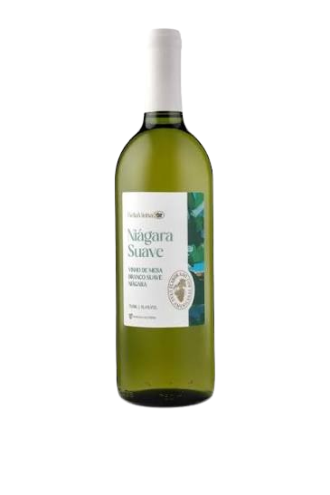
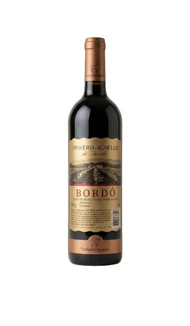
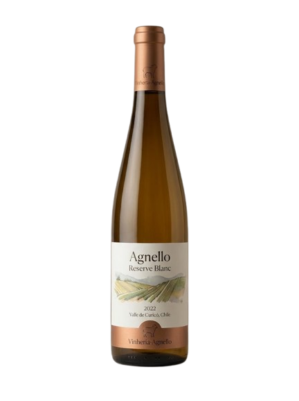

Cadastro de vinhos
Registre os rótulos da adega com nome, safra e quantidade em estoque. Os dados são pedidos um a um em caixas de diálogo e aparecem na lista abaixo.
Você pode cadastrar até 20 rótulos por sessão.
- Jovem
- até 3 anos de safra
- Amadurecido
- de 4 a 10 anos
- Antigo
- mais de 10 anos



Aguardando início da sessão.